01 / Fotografía
Fotografía de producto,
Fotografía de producto,
naturaleza y retrato
Empecé con una cámara de película y cuarto oscuro. Hoy trabajo con equipos digitales, pero la lógica es la misma: controlar la luz, entender el objeto, construir una imagen que diga algo concreto. Mi especialización más técnica es la fotografía de relojería y fornectura. Es un campo exigente: superficies metálicas reflectantes, cristales con capas antirreflectantes, mecanismos con piezas de menos de un milímetro. Llevo más de 32 años trabajando con este tipo de producto, y eso se nota en el resultado.
Relojería y producto de precisión


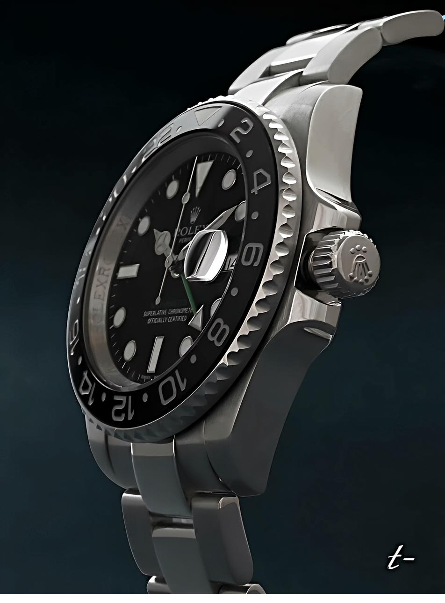
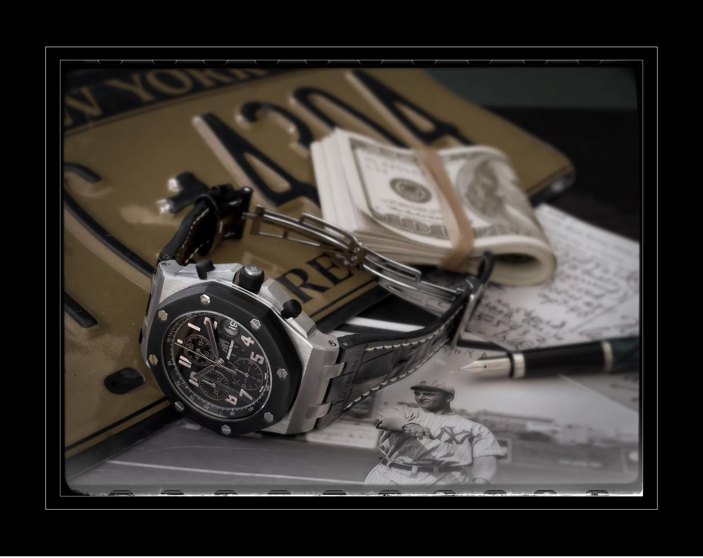
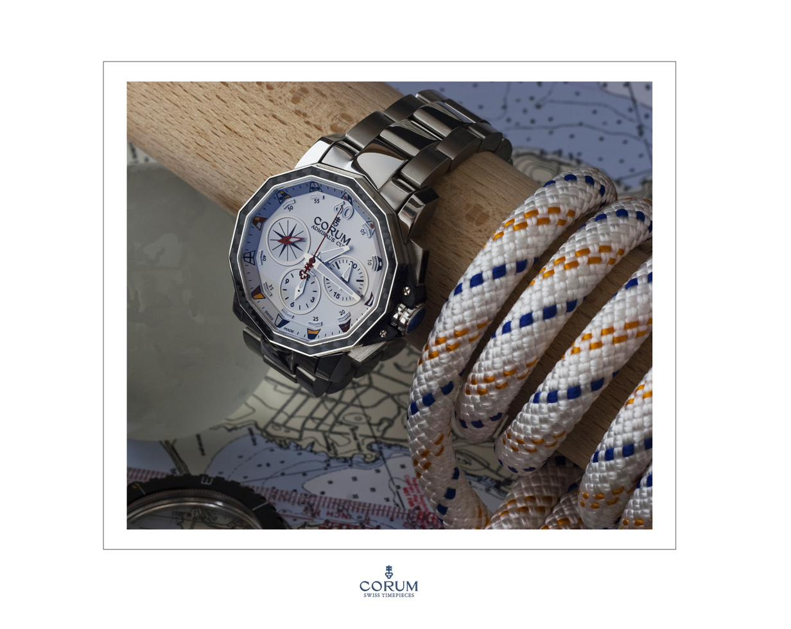
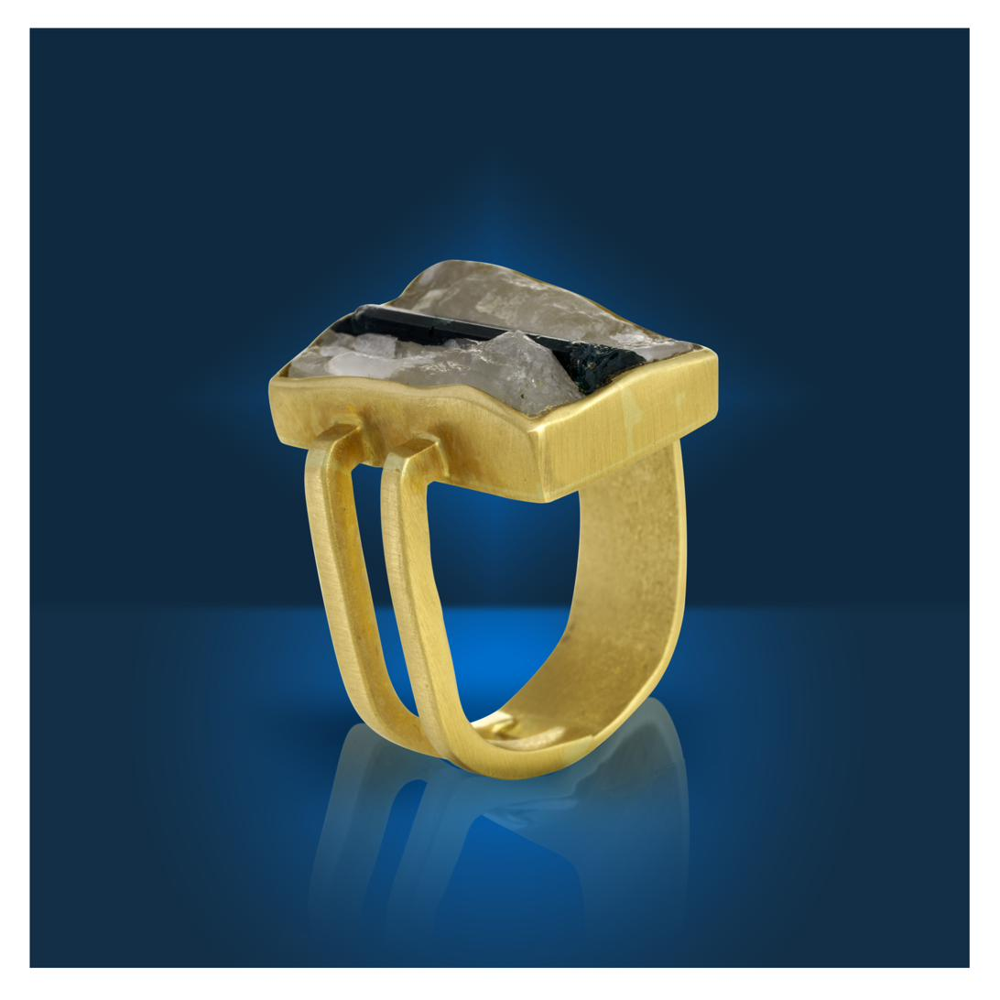
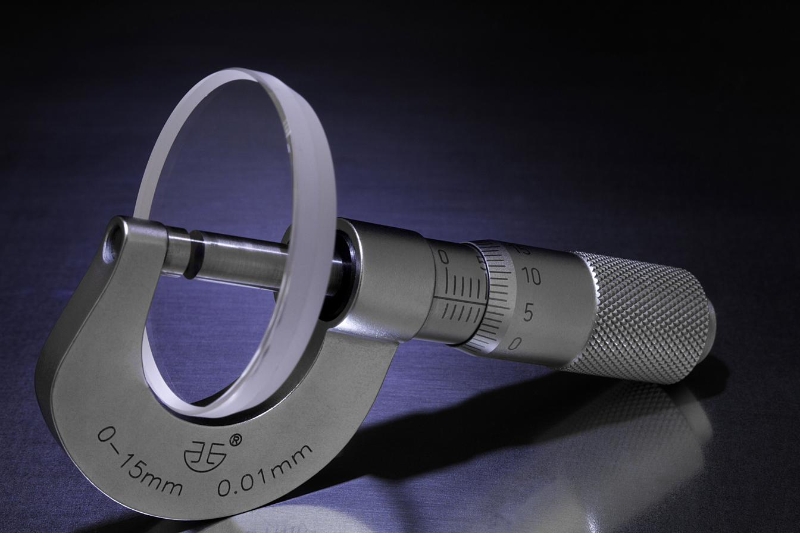
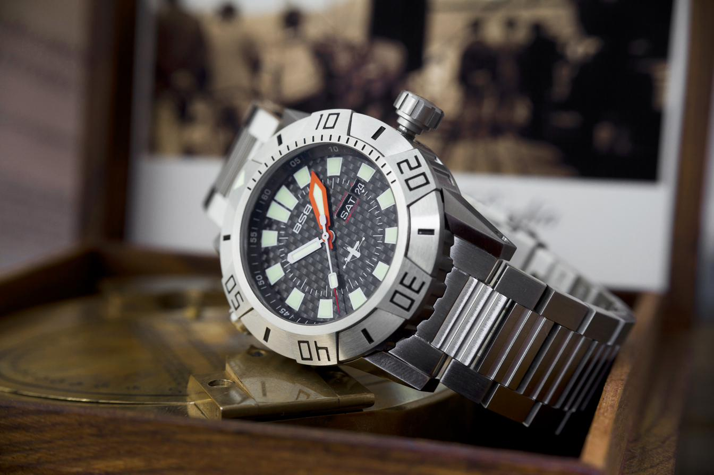
Naturaleza y paisaje
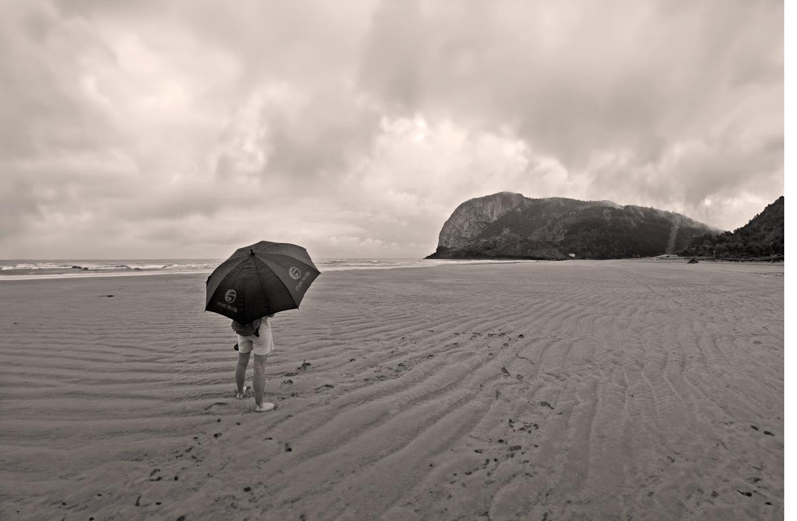
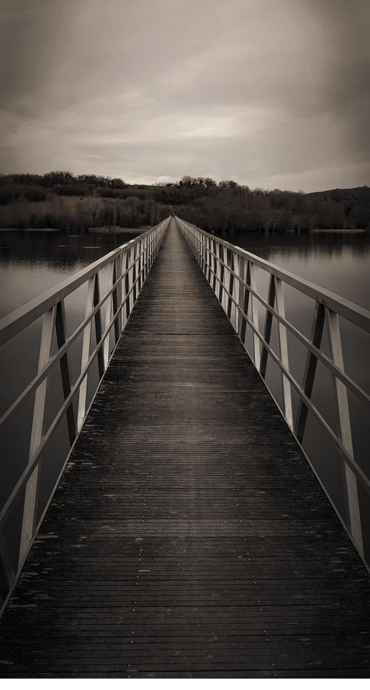
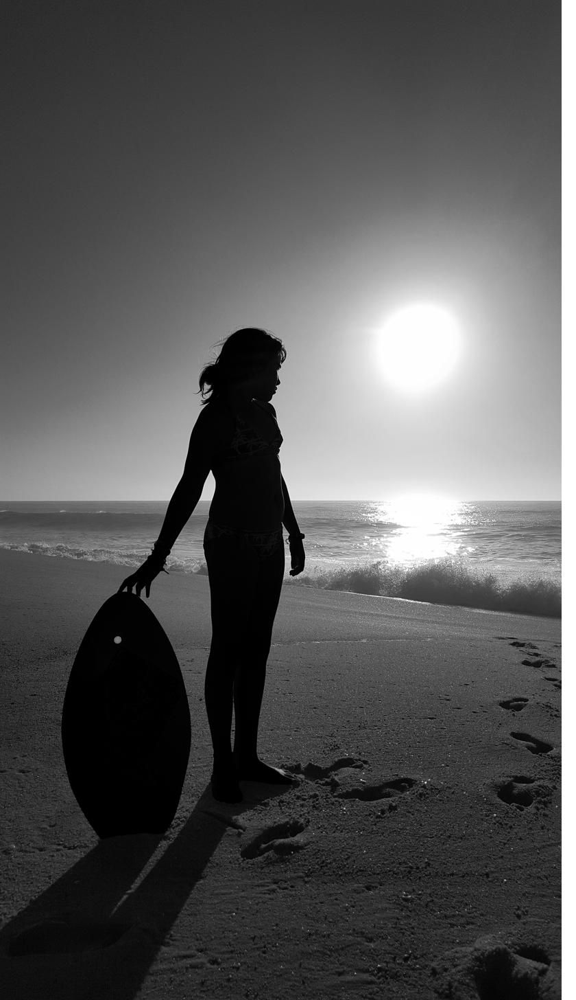
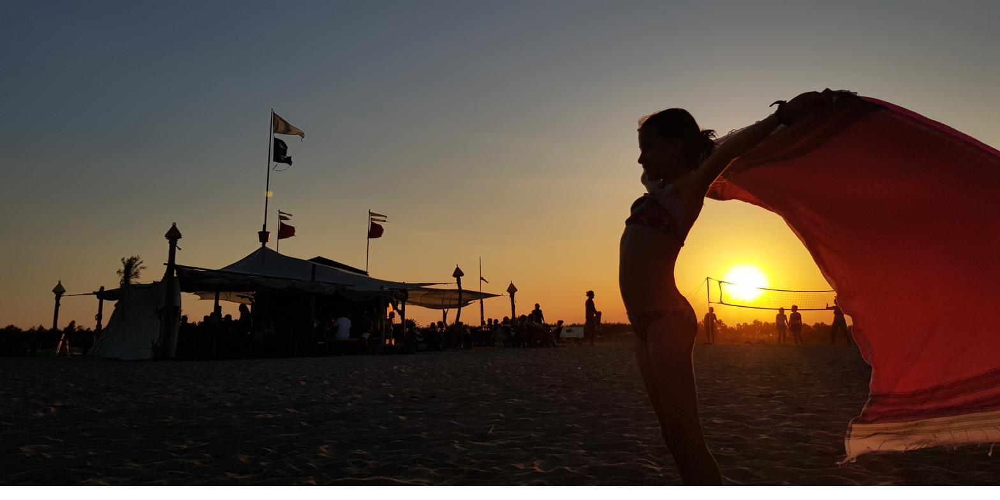
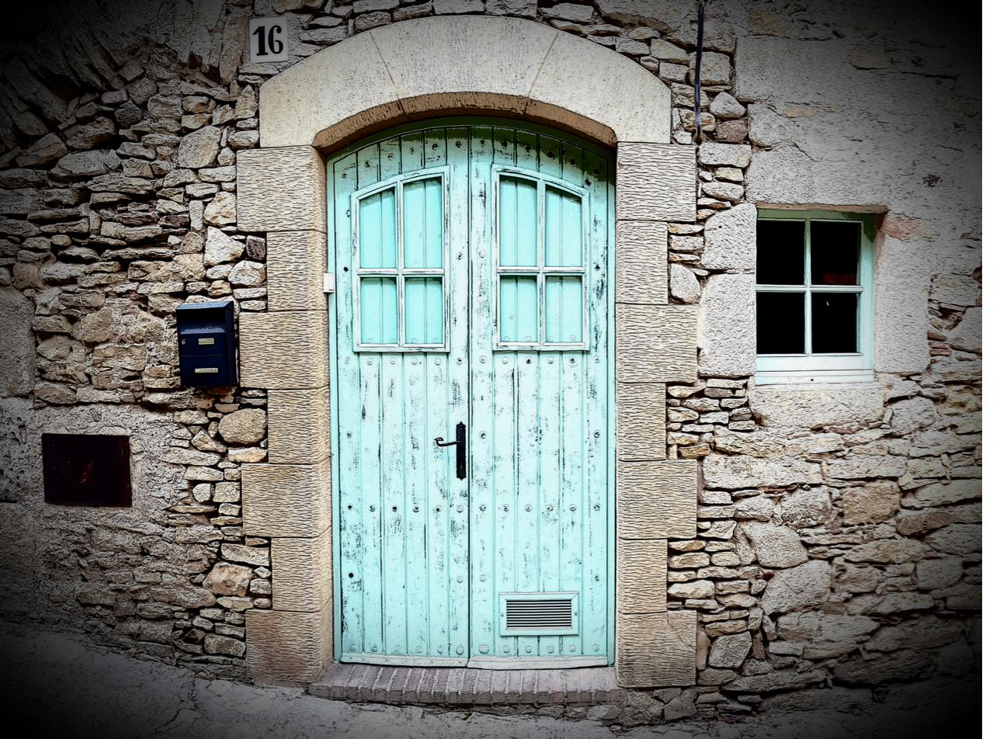
Retrato y fotografía social
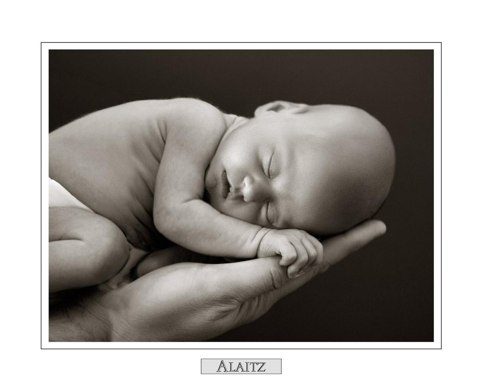
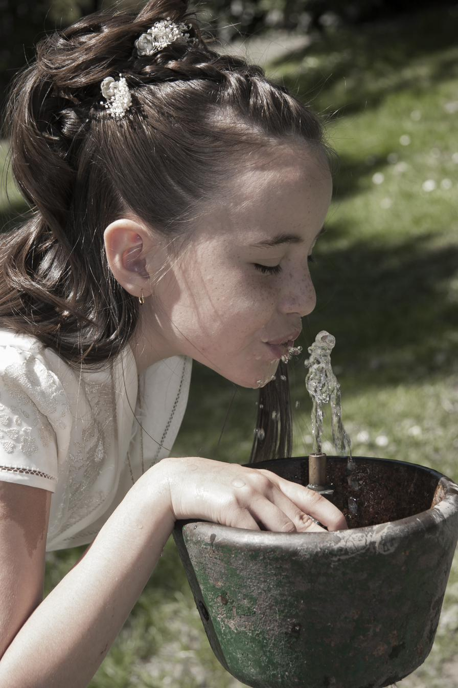
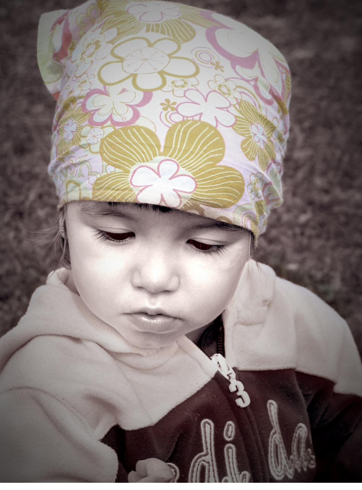
¿Quieres verlo todo junto? El portfolio completo en un único documento.